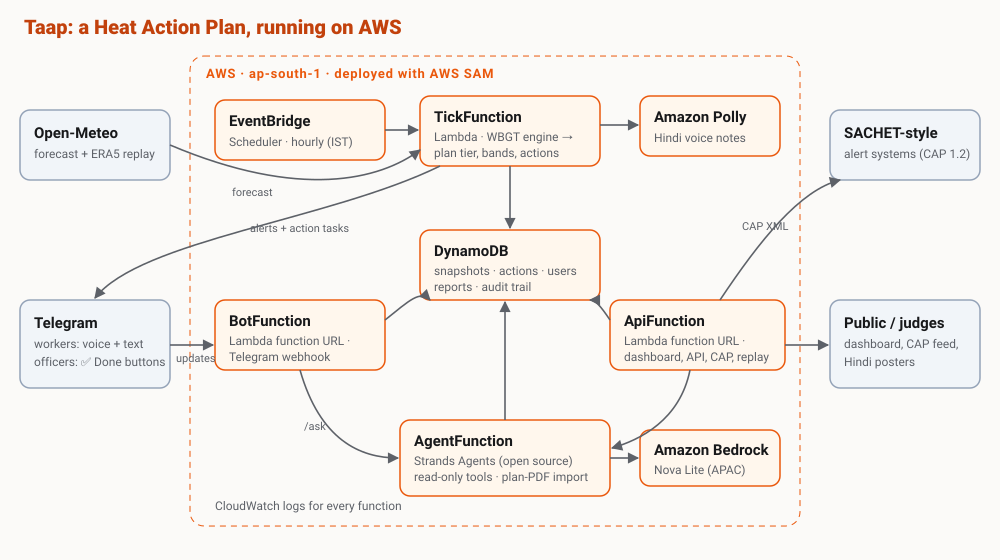

Why WBGT, not temperature
Bodies cool by sweating; humidity stops sweat evaporating, and direct sun adds heat. Wet Bulb Globe Temperature (WBGT) combines air temperature, humidity, wind and solar radiation into the number used in occupational heat-stress standards. Taap computes outdoor WBGT every hour for each zone with the Liljegren (2008) model, from Open-Meteo forecasts. It deliberately avoids the “simplified WBGT” (temperature and humidity only), which overstates heat stress in humid air.
On a humid October afternoon in Delhi, the plan's temperature-only tier can be green while WBGT is near 30°C. For heavy labour, that means 15 minutes of work an hour.
From WBGT to an instruction (ACGIH, heavy acclimatised work)
| Band | WBGT from | Each hour | हिंदी |
|---|
Guidance, not medical advice. Thresholds are configurable per city.
Two scales, side by side
Plan tier (green → red) follows the city's own Heat Action Plan thresholds on daily maximum temperature, raised one more level after a hot night when the plan is already active. Worker band (0 → 4) comes from hourly WBGT. Departments are tasked only once the plan is active; workers get guidance every day.
Alert fatigue
Workers get a push alert from band 2 and only when risk rises; nothing is sent between 9 PM and 6 AM; no alert once the day's danger window has passed.
What we don't claim
- Zones are ~10 km apart to match ~9 km forecast models. They are not wards.
- Values are modelled, not station readings. The replay uses ERA5 reanalysis, which runs below station peaks.
- IMD recorded 49.9°C at Mungeshpur and Narela on 28 May 2024; the 52.9°C reading was a sensor error and is not used.
- The AI assistant never decides alerts or actions; those are deterministic plan rules. It only answers questions from live data.
Making the advice doable
- Help nearby: water, shade and clinics from OpenStreetMap, plus cooling centres officers confirm with a location. Walking time assumes a slow 70 m/min; beyond 5–12 minutes (by risk band) the walk itself is flagged as exposure.
- New workers: people in their first ~2 weeks are not acclimatised; we use ACGIH's lower action limits (bands start 2.5–3.5°C earlier).
- Shift planner: fits the needed heavy-work hours into the safest hours first, and compares with a usual 9-to-5.
Saathi's safety design
- Red-flag symptoms (fainting, vomiting, confusion, no sweating, seizures) trigger fixed first-aid steps and tap-to-call 112. This path never uses the AI.
- Otherwise a Strands agent answers using tools only, so it cannot invent places, distances or temperatures.
- If the model is unavailable, keyword rules call the same tools, so workers always get an answer.
Architecture

Runs two ways from the same code: on AWS (SAM template: EventBridge, Lambda, DynamoDB, Polly, Bedrock) or on one machine with no AWS account (Strands Agents, AWS open source, on Groq or a local model, SQLite, Telegram long polling).
Sources
- Liljegren et al. (2008), Modeling the wet bulb globe temperature using standard meteorological measurements, J. Occup. Environ. Hyg. 5:645–655.
- ACGIH TLV screening criteria for heat stress (work–rest by WBGT).
- Centre for Policy Research (2023), How is India Adapting to Heatwaves?
- Hess et al. (2018), Ahmedabad Heat Action Plan evaluation (estimate; warning-level results not statistically significant).
- IMD press release, 29 May 2024 (PDF); Lancet Countdown 2025 (labour hours lost).
- Delhi Heat Action Plan (DDMA); Delhi LG order of 29 May 2024 (paid noon–3 PM break).
- Weather: Open-Meteo forecast and ERA5 archive, CC-BY 4.0. Maps © OpenStreetMap contributors.
Next
- WhatsApp and missed-call / IVR channels for feature phones.
- Ward vulnerability layers from land-surface temperature.
- Bias correction against IMD station readings.
- Parametric heat-insurance triggers for informal workers.